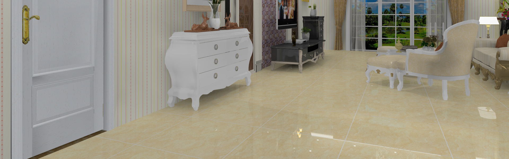

轮播图使用前
1.引用入css,修改类.wrap-sider的高度，修改.pre-ico和.next-ico背景图片的链接，类.minWidth与div标签可要可不要。
2.引入图片slider-ico.png
3.引入sliderImgMuluo.js或sliderImgMuluo.min.js(推荐使用)
4.用new声明slderImg()函数，实例在下面
5.该轮播图使用，懒加载的方式，先加载第一张图片，后加载其它图片，data-src就是懒加载图片的链接。
